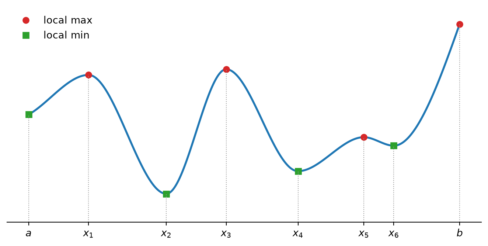
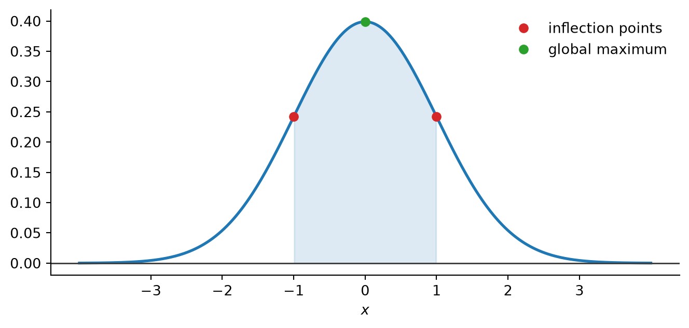

26 Maxima and Minima
Finding the largest or smallest value of a function is one of the oldest applications of calculus; it was one of the main motivations for its development in the seventeenth century. Before we get there, we look at what the second derivative says about the shape of a graph.
26.1 Concavity
The second derivative of \(f\) is the derivative of the derivative, \[ f'' = (f')'. \] Just as the sign of \(f'\) tells us whether \(f\) increases or decreases, the sign of \(f''\) tells us whether \(f'\) increases or decreases — that is, whether the graph of \(f\) is turning upward or downward.
We will repeatedly use the following simple observation. It says that a function cannot jump from a positive limit to non-positive values at nearby points.
NoteProof
Proof. Apply Proposition 10.1 with \(\varepsilon= \frac L2\): there is \(\delta>0\) such that \(\lvert g(x)-L \rvert<\frac L2\) whenever \(x\in D\) and \(0<\lvert x-\xi \rvert<\delta\). For such \(x\), \[ g(x) > L - \frac L2 = \frac L2 > 0 . \] If \(g\) is continuous at \(\xi\), then \(L=g(\xi)\) by Proposition 10.2, and the point \(x=\xi\) satisfies \(g(\xi)>0\) anyway. For \(L<0\), apply the result to \(-g\).
Now suppose \(f''\) exists and is continuous on an open interval containing \(x_0\), and that \(f''(x_0) > 0\). By Lemma 26.1, \(f''>0\) on some smaller open interval \(U\) around \(x_0\). A function with positive derivative on an interval is strictly increasing there (a consequence of the Mean Value Theorem). Applied to \(f'\), whose derivative is \(f''\), this shows that \(f'\) is strictly increasing on \(U\): the slope of the graph of \(f\) grows as we move from left to right. Likewise, \(f''(x_0)<0\) makes \(f'\) strictly decreasing near \(x_0\).
So the discussion above says: if \(f''\) is continuous and \(f''(x_0)>0\), then \(f\) is concave up on an open interval around \(x_0\); if \(f''(x_0)<0\), then \(f\) is concave down on such an interval.
Geometrically, a concave up graph bends away from its tangent lines on the upper side, while a concave down graph bends away on the lower side.
NoteProof
Proof. Let \(f\) be concave up and \(x\in I\), \(x\neq x_0\). By the Mean Value Theorem there is \(\beta\) strictly between \(x_0\) and \(x\) with \[ f(x) - f(x_0) = f'(\beta)\,(x-x_0), \qquad\text{so}\qquad f(x) - t(x) = \big(f'(\beta) - f'(x_0)\big)(x-x_0). \] If \(x>x_0\), then \(\beta>x_0\), so \(f'(\beta)>f'(x_0)\) since \(f'\) is strictly increasing, and both factors are positive. If \(x<x_0\), then \(\beta<x_0\), so \(f'(\beta)<f'(x_0)\), and both factors are negative. Either way \(f(x)-t(x)>0\). The concave down case is the same with the inequalities reversed (or apply part 1 to \(-f\)).
NoteSolution
Solution. For instance:
\(f(x)=e^x\): \(f'(x)=f''(x)=e^x>0\).
\(f(x)=\ln x\) on \((0,\infty)\): \(f'(x)=\frac1x>0\), \(f''(x)=-\frac1{x^2}<0\).
\(f(x)=e^{-x}\): \(f'(x)=-e^{-x}<0\), \(f''(x)=e^{-x}>0\).
\(f(x)=\ln(-x)\) on \((-\infty,0)\): \(f'(x)=\frac1x<0\), \(f''(x)=-\frac1{x^2}<0\).
26.2 Inflection Points
What happens at a point where \(f''(x_0)=0\)? Typically \(f''\) changes sign there, but not necessarily. To be precise about this, we fix what “changing sign” means.
Note that the value \(g(\xi)\) plays no role in this definition.
At an inflection point, \(f\) is concave up on one side of \(\xi\) and concave down on the other. One can show (using Proposition 26.1 on each side) that the curve crosses its tangent line there: it lies above the tangent on one side and below it on the other.
If \(f''\) is continuous, then \(f''(\xi)=0\) at every inflection point \(\xi\): if we had, say, \(f''(\xi)>0\), then by Lemma 26.1 \(f''\) would be positive on both sides of \(\xi\), so it could not change sign. The converse is false.
26.3 Global Maxima and Minima
The maximum value of \(f\) is unique if it exists, but it may be attained at several points.
Global maxima and minima need not exist.
On a closed bounded interval, however, a continuous function always attains a maximum and a minimum. We already used this fact (see Remark 11.2); here is the official statement.
26.4 Local Extrema
Global extrema are often hard to find directly. What calculus provides are methods to locate local (or relative) extrema, among which the global ones must be found.
In words: \(\xi\) is a local maximum if it is a global maximum of \(f\) restricted to points of the domain sufficiently close to \(\xi\). Every global maximum is in particular a local one. The intersection with \(D\) matters when \(\xi\) is an endpoint of the domain: for \(D=[a,b]\) and \(\xi=a\), the condition only compares \(f(a)\) with values \(f(z)\) for \(a\le z<\beta\). So endpoints can be local extrema.
Figure 26.1 illustrates several points. A local maximum need not be a global one, and the value at a local maximum (\(x_5\)) may even be smaller than the value at a local minimum (\(a\)). The picture also suggests that local maxima and minima alternate: between any two local maxima there is a local minimum.
NoteSolution
Solution. By Theorem 26.1, \(f\) restricted to \([p,q]\) attains a minimum value \(m\). We claim that \(m\) is attained at some point \(c\in(p,q)\). If not, \(m\) is attained only at endpoints, say at \(p\) (the case \(q\) is symmetric). Since \(p\) is a local maximum, there is \(\beta>p\) with \(f(z)\le f(p)\) for all \(z\in(p,\beta)\); we may take \(\beta\le q\). But also \(f(z)\ge m = f(p)\) for \(z\in[p,q]\). Hence \(f(z)=f(p)=m\) on \((p,\beta)\), so \(m\) is attained inside \((p,q)\) after all.
Now \(f(c)=m\le f(z)\) for all \(z\in(p,q)\), and \((p,q)\) is an open interval containing \(c\), so \(f\) has a local minimum at \(c\).
26.5 A Necessary Condition: Critical Points
At a local extremum in the interior of the domain, the tangent to a differentiable function must be horizontal.
So Theorem 26.2 says: at an interior point where \(f\) is differentiable, a local extremum can only occur at a critical point.
NoteProof
Proof. Suppose \(f\) has a local maximum at \(\xi\). Shrinking \(\delta\) if necessary, we have \[ f(\xi+h)\le f(\xi) \qquad\text{for all } h \text{ with } \lvert h \rvert<\delta . \] Hence the difference quotient satisfies \[ \frac{f(\xi+h)-f(\xi)}{h} \le 0 \quad\text{for } 0<h<\delta, \qquad\qquad \frac{f(\xi+h)-f(\xi)}{h} \ge 0 \quad\text{for } -\delta<h<0, \] since the numerator is \(\le0\) and the denominator is positive in the first case and negative in the second. As \(f\) is differentiable at \(\xi\), both one-sided limits of the difference quotient exist and equal \(f'(\xi)\).
- Letting \(h\to0^+\): if we had \(f'(\xi)>0\), then by Lemma 26.1 the difference quotient would be positive for all sufficiently small \(h>0\), a contradiction. So \(f'(\xi)\le0\).
- Letting \(h\to0^-\): by the same argument, \(f'(\xi)\ge0\).
Therefore \(f'(\xi)=0\). If \(f\) has a local minimum at \(\xi\), apply this to \(-f\), which has a local maximum at \(\xi\).
The condition \(f'(\xi)=0\) is necessary but not sufficient for a local extremum.
26.6 The First Derivative Test
The sign of \(f'\) to the left and to the right of a point decides whether there is a local extremum.
NoteProof
Proof. We use the Mean Value Theorem. Note that for \(x\) in the interval, \(f\) is continuous on the closed interval between \(x\) and \(\xi\) and differentiable at every point strictly between them, so the Mean Value Theorem applies.
Part 1. Let \(\xi-\delta<x<\xi\). There is \(\beta\in(x,\xi)\) with \[ f(\xi)-f(x) = \underbrace{f'(\beta)}_{>0}\,\underbrace{(\xi-x)}_{>0} > 0, \] so \(f(x)<f(\xi)\). Now let \(\xi<x<\xi+\delta\). There is \(\beta\in(\xi,x)\) with \[ f(x)-f(\xi) = \underbrace{f'(\beta)}_{<0}\,\underbrace{(x-\xi)}_{>0} < 0, \] so again \(f(x)<f(\xi)\). Thus \(f(x)<f(\xi)\) for all \(x\neq\xi\) in \((\xi-\delta,\xi+\delta)\): a strict local maximum.
Part 2. Apply part 1 to \(-f\).
Part 3. Suppose \(f'>0\) on both sides. The first computation above gives \(f(x)<f(\xi)\) for \(\xi-\delta<x<\xi\), while the second, now with \(f'(\beta)>0\), gives \(f(x)>f(\xi)\) for \(\xi<x<\xi+\delta\). Every open interval around \(\xi\) contains points of both kinds, so \(\xi\) is neither a local maximum nor a local minimum. The case \(f'<0\) on both sides is analogous.
In many practical situations, \(f'\) is continuous and has only finitely many zeros. Then the three cases of Theorem 26.3 cover everything, and we get a clean characterization.
NoteProof
Proof. By the Intermediate Value Theorem (Remark 10.4), the continuous function \(f'\), which has no zero on \((\xi-\delta,\xi)\), has constant sign there; likewise on \((\xi,\xi+\delta)\). So exactly one of the three cases of Theorem 26.3 applies.
26.7 The Second Derivative Test
Often it is easier to look at a single number, \(f''(\xi)\), than at the sign of \(f'\) on both sides of \(\xi\). If \(f''\) is continuous and \(f''(\xi)>0\), then \(f\) is concave up near \(\xi\), so its graph lies above the tangent (Proposition 26.1). At a critical point the tangent is the horizontal line \(y=f(\xi)\), so \(f(\xi)\) must be a local minimum. The following theorem makes this precise, and in fact does not need continuity of \(f''\).
NoteProof
Proof. Suppose \(f''(\xi)>0\). Since \(f'(\xi)=0\), \[ 0 < f''(\xi) = \lim_{h\to0}\frac{f'(\xi+h)-f'(\xi)}{h} = \lim_{h\to0}\frac{f'(\xi+h)}{h}. \] By Lemma 26.1 there is \(\delta>0\) with \(\frac{f'(\xi+h)}{h}>0\) for \(0<\lvert h \rvert<\delta\). So \(f'(\xi+h)\) has the same sign as \(h\): \(f'<0\) on \((\xi-\delta,\xi)\) and \(f'>0\) on \((\xi,\xi+\delta)\). (We may take \(\delta\) so small that \(f\) is differentiable, hence continuous, on \((\xi-\delta,\xi+\delta)\).) By Theorem 26.3, part 2, \(f\) has a strict local minimum at \(\xi\). For \(f''(\xi)<0\), apply this to \(-f\).
From local to global
A local extremum need not be global. To decide whether it is, we have to consider the function on its whole domain. The following criterion, which also goes back to the sign of \(f'\), is often useful.
NoteProof
Proof. This is the proof of Theorem 26.3, part 1, except that \(x\) may now be any point of \(I\): for \(x\in I\), \(x<\xi\), the Mean Value Theorem on \([x,\xi]\) gives \(f(\xi)-f(x) = f'(\beta)(\xi-x)>0\), and for \(x>\xi\) it gives \(f(x)-f(\xi)=f'(\beta)(x-\xi)<0\). The same argument applied to any two points \(x<w\) on the same side of \(\xi\) gives the monotonicity statement.
If \(f''\) has the same sign on the whole interval, the sign condition on \(f'\) comes for free.
NoteProof
Proof. In case 1, \(f''<0\) on \(I\) means that \(f'\) is strictly decreasing on \(I\). Since \(f'(\xi)=0\), we get \(f'(x)>0\) for \(x<\xi\) and \(f'(x)<0\) for \(x>\xi\), and Proposition 26.2 gives the strict global maximum. If \(I=[a,b]\), the same proposition says that \(f\) is strictly increasing on \([a,\xi]\) and strictly decreasing on \([\xi,b]\), so the smallest value on \([a,\xi]\) is \(f(a)\), the smallest value on \([\xi,b]\) is \(f(b)\), and the global minimum is \(\min\{f(a),f(b)\}\). Case 2 follows by applying case 1 to \(-f\).
26.8 Example: The Gaussian
The Gaussian (or normal) density with parameters \(\mu\in\mathbb{R}\) and \(\sigma>0\) is \[ f(x) = \frac{1}{\sigma\sqrt{2\pi}}\exp\Big(-\frac{(x-\mu)^2}{2\sigma^2}\Big), \qquad x\in\mathbb{R}. \] Its graph is the familiar bell curve. The case \(\mu=0\), \(\sigma=1\), \[ \varphi(x) = \frac1{\sqrt{2\pi}}\,e^{-x^2/2}, \] is the standard normal density. Note that \(f(x)>0\) for all \(x\). We determine its extrema and inflection points.
Step 1: critical points. By the chain rule, \[ f'(x) = \frac{1}{\sigma\sqrt{2\pi}}\exp\Big(-\frac{(x-\mu)^2}{2\sigma^2}\Big)\cdot \Big(-\frac{2(x-\mu)}{2\sigma^2}\Big) = -\frac{x-\mu}{\sigma^2}\,f(x). \] Since \(f(x)>0\), we have \(f'(x)=0\) if and only if \(x=\mu\). So \(\mu\) is the only critical point.
Step 2: local extremum. Again since \(f(x)>0\) and \(\sigma^2>0\), the sign of \(f'(x)\) is the sign of \(-(x-\mu)\): \[ f'(x)>0 \ \text{ for } x<\mu, \qquad f'(x)<0 \ \text{ for } x>\mu . \] So \(f'\) changes sign from \(+\) to \(-\) at \(\mu\), and by Theorem 26.3 \(f\) has a strict local maximum at \(\mu\).
We can also use Theorem 26.4. By the product rule, using \(f'(x)=-\frac{x-\mu}{\sigma^2}f(x)\) once more, \[ f''(x) = -\frac{1}{\sigma^2}\,f(x) - \frac{x-\mu}{\sigma^2}\,f'(x) = -\frac{1}{\sigma^2}\,f(x) + \frac{(x-\mu)^2}{\sigma^4}\,f(x) = \frac{f(x)}{\sigma^4}\Big((x-\mu)^2-\sigma^2\Big). \] In particular \(f''(\mu) = -\frac{f(\mu)}{\sigma^2}<0\): \(f\) is concave down at \(\mu\), confirming the local maximum.
Step 3: is the local maximum global? Here Corollary 26.2 does not apply, since \(f''\) is not negative everywhere (see Step 4). But the sign information from Step 2 holds on all of \(\mathbb{R}\), so Proposition 26.2 applies with \(I=\mathbb{R}\): \(f\) has a strict global maximum at \(\mu\), with maximum value \[ f(\mu) = \frac{1}{\sigma\sqrt{2\pi}} . \] There is no global minimum: \(f\) is symmetric about \(\mu\), i.e. \(f(\mu+t)=f(\mu-t)\), and strictly decreasing on \([\mu,\infty)\). Hence \(f(x)<f(\xi)\) whenever \(\lvert x-\mu \rvert>\lvert \xi-\mu \rvert\), so no value is the smallest.
Step 4: inflection points. Since \(\frac{f(x)}{\sigma^4}>0\), the sign of \(f''(x)\) is the sign of \((x-\mu)^2-\sigma^2\). Thus \[ f''(x)<0 \ \text{ for } \lvert x-\mu \rvert<\sigma, \qquad f''(x)>0 \ \text{ for } \lvert x-\mu \rvert>\sigma, \] and \(f''(x)=0\) exactly at \(x=\mu\pm\sigma\). At both of these points \(f''\) changes sign, so they are inflection points. The bell curve is concave down on \((\mu-\sigma,\mu+\sigma)\) and concave up outside of it: the inflection points lie exactly one standard deviation away from the mean.
For the standard normal density (\(\mu=0\), \(\sigma=1\)) the formulas read \[ \varphi'(x) = -x\,\varphi(x), \qquad \varphi''(x) = (x^2-1)\,\varphi(x), \] with the global maximum at \(0\) and inflection points at \(\pm1\).

26.9 Global Extrema on a Closed Interval
If the domain is a closed bounded interval, there is a systematic way to find the global extrema. Let \(f\) be continuous on \([a,b]\) and differentiable on \((a,b)\), except possibly at finitely many points.
By Theorem 26.1, \(f\) has a global maximum and a global minimum on \([a,b]\). Where can they be? If a global extremum occurs at an interior point \(\xi\in(a,b)\) at which \(f\) is differentiable, then it is in particular a local extremum, so \(f'(\xi)=0\) by Theorem 26.2. Hence every global extremum occurs at one of the following candidate points:
- the critical points of \(f\) in \((a,b)\);
- the points of \((a,b)\) at which \(f\) is not differentiable;
- the endpoints \(a\) and \(b\).
This yields the following procedure.
- Determine all candidate points.
- Compute the value of \(f\) at each of them.
- The largest of these values is the global maximum value, the smallest is the global minimum value.
Note that we do not need to determine first which critical points are local maxima or minima; comparing values is enough. The procedure works as long as there are only finitely many candidates, which is the case in most examples.
On domains that are not closed bounded intervals, the procedure can fail, because global extrema need not exist (Example 26.3). There, one has to argue as in Step 3 of the Gaussian example.
26.10 Summary
- The second derivative \(f''\) controls the bending of a graph. If \(f''\) is continuous and \(f''(x_0)>0\), then \(f''>0\) near \(x_0\) (Lemma 26.1), so \(f'\) is strictly increasing there: \(f\) is concave up (convex) near \(x_0\) (Definition 26.1), and the curve lies above its tangent lines (Proposition 26.1). For \(f''(x_0)<0\), \(f\) is concave down and the curve lies below its tangents.
- An inflection point is a point where \(f''\) changes sign (Definition 26.3), i.e. where concavity changes. If \(f''\) is continuous, \(f''=0\) there, but \(f''(\xi)=0\) alone is not enough: \(x^4\) at \(0\) (Example 26.1).
- Global extrema (Definition 26.4) need not exist (Example 26.3), but a continuous function on a closed bounded interval always has a maximum and a minimum (Theorem 26.1). Local extrema (Definition 26.5) only compare \(f(\xi)\) with nearby values; endpoints of the domain can be local extrema.
- At an interior local extremum where \(f\) is differentiable, \(f'(\xi)=0\): local extrema occur at critical points (Theorem 26.2). This is necessary but not sufficient (\(x^3\) at \(0\), Example 26.4).
- First derivative test (Theorem 26.3): \(f'\) changing sign from \(+\) to \(-\) gives a strict local maximum, from \(-\) to \(+\) a strict local minimum, and no sign change gives no extremum. If \(f'\) is continuous with no zeros near \(\xi\) other than \(\xi\), a local extremum occurs exactly when \(f'\) changes sign (Corollary 26.1); in general, a local extremum does not force a sign change (Remark 26.5).
- Second derivative test (Theorem 26.4): at a critical point, \(f''(\xi)>0\) gives a strict local minimum and \(f''(\xi)<0\) a strict local maximum; \(f''(\xi)=0\) is inconclusive.
- From local to global: if \(f'>0\) to the left and \(f'<0\) to the right of \(\xi\) on an entire interval, the maximum at \(\xi\) is global (Proposition 26.2); this holds in particular if \(f''<0\) on the whole interval (Corollary 26.2). For the Gaussian, the maximum at \(\mu\) is global and the inflection points are \(\mu\pm\sigma\).
- On a closed interval \([a,b]\), the global extrema are found by comparing the values of \(f\) at the critical points, the points of non-differentiability, and the endpoints (Example 26.5).